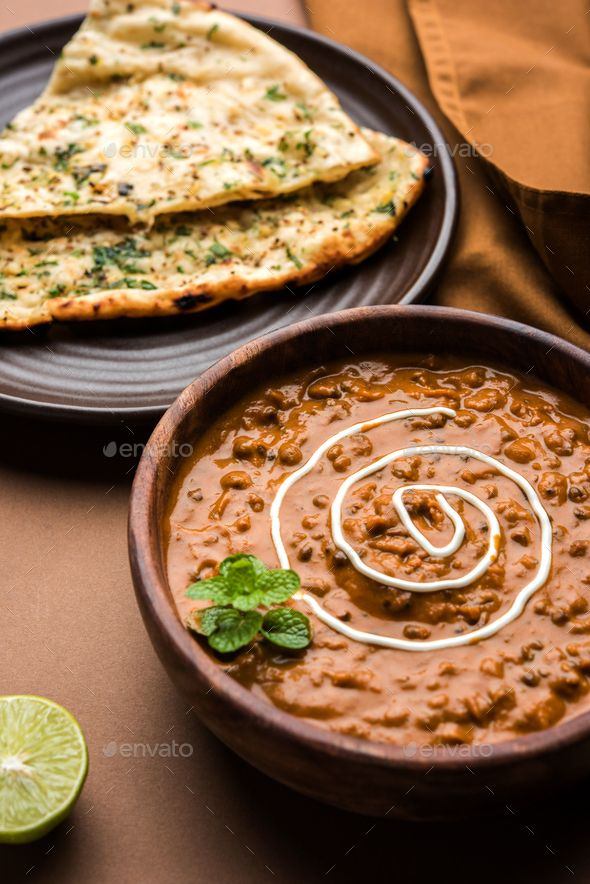

INGREDIENTS
For Cooking the Dal:
- 1/2 cup whole urad dal (black lentils)
- 2 tbsp rajma (kidney beans) (optional, but enhances taste)
- 3 cups water
- 1/2 tsp salt
- 1/2 tsp turmeric powder
For Gravy:
- 2 tbsp butter (or ghee for richer taste)
- 1 tbsp oil
- 1 onion (finely chopped)
- 2 tomatoes (pureed)
- 1 tsp ginger-garlic paste
- 6-8 cashews (soaked and blended into a paste) (optional for creaminess)
- 1/2 tsp turmeric powder
- 1 tsp red chili powder
- 1/2 tsp coriander powder
- 1/2 tsp garam masala
- 1/2 cup fresh cream or milk
- 1/2 cup water (as needed)
- Salt to taste
For Garnishing:
- 1 tbsp fresh cream (optional)
- Fresh coriander leaves (chopped)
- 1 tsp kasuri methi (dried fenugreek leaves) (crushed, optional for extra flavor)
Recipe
- Cook the Lentils
- -Wash urad dal and rajma thoroughly and soak them overnight.
- -Pressure cook them with 3 cups of water, salt, and turmeric for 5-6 whistles or until soft. Mash slightly and set aside.
- Prepare the Gravy
- -Heat butter and oil in a pan.
- -Add chopped onions and sauté until golden brown.
- -Add ginger-garlic paste and cook for a minute.
- -Stir in tomato puree and cook until oil separates.
- -Add cashew paste, red chili powder, coriander powder, garam masala, and salt. Mix well.
- Simmer the Dal
- -Add the cooked dal and rajma to the gravy.
- -Pour in water and let it simmer for 20-30 minutes on low heat, stirring occasionally.
- -Add fresh cream or milk, mix well, and cook for another 5 minutes.
- Final Touch & Serve
- -Crush and add kasuri methi for extra aroma.
- -Serve hot with naan, roti, or jeera rice.
- Pro Tips:
- -✔ For an authentic restaurant-style taste, simmer for a longer time (even up to 1 hour on low heat).
- -✔ For a smoky flavor, use the "dhungar" method (place a burning charcoal piece in a bowl inside the
- -✔ pour ghee on it, cover, and let it infuse for 2 minutes).
- -✔ Adjust cream or milk based on preference—more for creaminess, less for a lighter version.